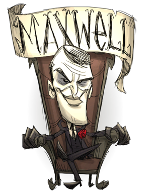

Maxwell
He may have low health, but due to his starter items he can start killing things right away. (just dont get carried away.) Also his sanity is constantly regenerating so you dont have to worry about his sanity plummeting. Lastly he can create his own shadow puppets to aid him in combat. (Just make sure to not spawn in to many or else you will lose a lot of sanity.)